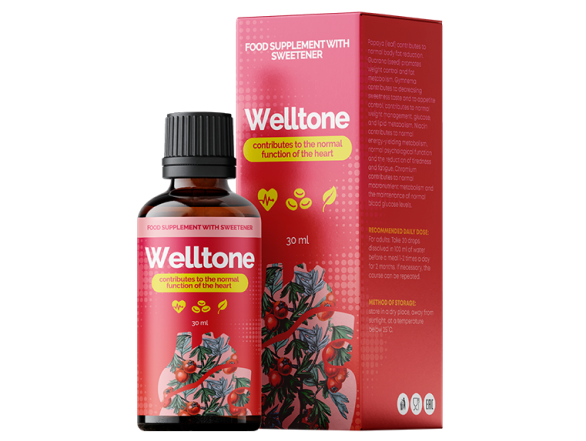
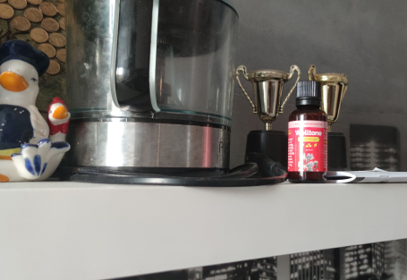
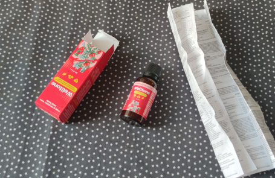

Vyriausiasis Lietuvos kardiologas: „Kas trečias vyresnis nei 45 metų Lietuvos pilietis per artimiausius 10 metų mirs nuo hipertenzijos, nesuvokdamas, kad serga. Valstybė nesirūpina pensininkų ir hipertenzija sergančių pacientų sveikata“
Arvydas Baublys
Lietuvos kardiologų asociacijos vyriausiasis gydytojas, profesorius, Europos Sąjungos nusipelnęs gydytojas
Darbo patirtis: 39 metai
-
12 mln
Kasmet nuo širdies ligų miršta 12 mln.
-
95%
95% atvejų galima išvengti chirurginės intervencijos.
-
85%
Daugiau nei 85% insultų ir širdies priepuolių yra susiję su nešvariomis kraujagyslėmis.
„Per visus savo medicinos praktikos metus nemačiau tokios baisios statistikos. Dabar mano misija yra padėti tiems žmonėms ir pratęsti jų gyvenimą! Esu visiškai įsitikinęs, kad kiekvienas Lietuvos pilietis galės sau padėti namuose“.
Prof. Arvydas Baublys – serbų kardiologas, profesorius. Ji garsėja tuo, kad gydo žmones be tablečių. Jos teigimu, dėl netinkamo aukšto kraujospūdžio gydymo 2021–2022 m. mirė kas ketvirtas pensininkas. Laimei, Danica Gruičić turi planą pailginti žmonių gyvenimą 12–15 metų.
Arvydas Baublys įsitikinęs, kad KIEKVIENAS GALI NAMUOSE IŠVALYTI KRaujagysles, PAGERINTI ŠIRDIES KRAUJAGYSLIŲ SISTEMOS DARBĄ IR GYVENTI 15 METŲ!
Kaip atliekamas šis gydomasis valymas, gydytojas paaiškino žemiau.
Šiame straipsnyje taip pat minimos šios temos:
- Išgyventi iki 100 metų be tablečių yra realu!
- Kodėl lėtinės nepagydomos ligos eina koja kojon su užsikimšusiomis kraujagyslėmis
- Paslėpti ir akivaizdūs nešvarių kraujagyslių požymiai
- ŠIUOLAIKINIAI HIPERTENZIJOS GYDYMO METODAI pagyvenusiems žmonėms BE Tablečių
Kraujagyslių nepaisymas gali būti jūsų žudikas!
Profesorius Arvydas Baublys:
– Pateiksiu šiek tiek informacijos, kuri, tikiuosi, privers susimąstyti.
Dažniausia mirties priežastis planetoje yra ŠIRDIES IR KRAUJOVĖS LIGOS. Pagrindinė tokių su amžiumi atsirandančių ligų atsiradimo priežastis yra CHOLESTEROLIS. Cholesterolis, pasirodo, yra pavojingiausia medžiaga planetoje. Kad cholesterolis žudo daugiau žmonių nei alkoholis, nikotinas ir narkotikai kartu paėmus.
94% atvejų, jei žmogus miršta nesulaukęs 80 metų, kaltas blogasis cholesterolis.
Cholesterolis kenkia sveikatai. Jei cholesterolis nesikauptų kraujagyslėse, žmogus nesunkiai išgyventų iki 100 metų.
Kaip atrodo cholesterolis ir kas tai yra? Pateiksiu paprastą palyginimą: įsivaizduokite riebalus ant keptuvės, kuri atvėso ir sustingo. Maždaug taip atrodo cholesterolis.
Būdama kraujyje, ši medžiaga nusėda išilgai kraujagyslių sienelių. Pirmiausia tai plonas sluoksnis (per 20-25 m.), vėliau greitai sutirštėja cholesterolio sluoksnis (25-40 m.), nes vis daugiau dalelių prilimpa prie lipnaus paviršiaus. DĖL 40 METŲ CHOLESTEROLIS BEVEIK Dvigubai padidina KRaujagyslių ATIDARYMĄ. O širdis neturi nieko kito, kaip tik didinti kraujospūdį. Žmogus patiria slėgio šuolius ir su amžiumi susijusią hipertenziją su visomis pasekmėmis. Ir tai nėra pavojingiausia!
Daug pavojingiau, kai cholesterolis visiškai užkemša smulkias kraujagysles, kurios prasiskverbia į visus audinius. Dėl pablogėjusio aprūpinimo krauju vidaus organuose vystosi patologiniai procesai. Ir tai yra lėtinių ligų vystymosi pagrindas.
Žodžiu, viskas organizme priklauso nuo kraujagyslių būklės. Jei kojų kraujagyslės užsikimšusios, tai sukelia venų varikozę, nuolatinį patinimą ir nuolatinį sunkumo jausmą kojose. Jei užsikimšimas yra kepenyse, atsiranda hepatozė ir cirozė; jei jis yra sąnariuose, atsiranda artritas, artrozė ar skausmas stuburo srityje. Jei akių kraujagyslės užsikemša, žmogus pamažu praranda regėjimą.
Cholesterolio nusėdimas yra neišvengiamas. Tai atsitinka kiekvieno žmogaus kraujagyslėse. O kraujagyslių užsikimšimas yra greito senėjimo priežastis.
Užsikimšusios kraujagyslės gali sukelti negrįžtamų pasekmių
Kai kraujagyslės užsikemša cholesterolio ir kitų nuosėdų, kenčia absoliučiai visi organai. Pagrindinė našta tenka širdies ir kraujagyslių sistemai. Paminėsiu tik 10% viso ligų, kurios pasireiškia žmonėms, kurių arterijų užsikimšimas, sąrašo:
1. Hipertenzija. Kaip sakiau, kraujas negali patekti į organus dėl siauro kraujagyslių spindžio.
2. Insultas. Smegenų kraujagyslės užsikimšusios arba plyšusios. Sutrinka smegenų pusrutulių aprūpinimas krauju, neuronai badauja ir miršta.
3. Aterosklerozė. Kai cholesterolio kiekis gerokai viršija normą, kraujagyslės sienelėje susidaro aterosklerozinė plokštelė. Kraujo judėjimas į organus gali būti sustabdytas bet kuriuo metu ir sukelti ankstyvą mirtį.
4. Širdies smūgis. Dažniausia pažengusios aterosklerozės pasekmė.
Ne kartą mačiau užsikimšusių kraujagyslių pasekmes. Audiniai skausmingai miršta, kenčia VISI organai.
Profesorius Arvydas Baublys:
Iš karto galiu pasakyti, jei jums niekada nebuvo valytos kraujagyslės, o jums daugiau nei 50 metų, tai jūsų kraujagyslės tikrai nešvarios. Vos pradėję juos valyti, PAJUSIITE PAGERĖJIMĄ BEVEIK IŠ karto.
Nešvarių kraujagyslių simptomai:
Jei turite bent 2 iš šių simptomų, turite nedelsiant išvalyti kraujagysles!- Patinimas po nakties miego
- Spengimas ausyse
- Turi būti jiems prieš akis
- Sąnarių skausmai
- Vertigo
- Nemiga naktį ir mieguistumas dieną
- Nuolatinis nuovargio jausmas
- Regėjimo pablogėjimas
- Atminties pablogėjimas
- Venų išsiplėtimas
- Dusulys
- Dažnos virškinimo trakto problemos
- Problemos su pertekliniu kūno svoriu
Ar galite ginčytis, kad kraujagyslių valymas gali pailginti vyresnio amžiaus žmonių gyvenimą ir stabilizuoti kraujospūdį?
Profesorius DR. Arvydas Baublys:
- Aš žinau tai! Mūsų klinikoje kraujagysles valyti rekomenduojame visiems vyresniems nei 50 metų (o kai kuriems net vyresniems nei 40 metų) pacientams. Tik po valymo mes nustatome, kaip elgtis toliau. MAŽdaug 9 IŠ 10 ŽMONIŲ SLĖGIS NORMALIZUOJAMAS IŠ karto PO VALYMO IR TOLIAU GYDYTI NEREIKALINGAS.
Kitaip tariant, daugelis žmonių, kurie dabar reguliariai vartoja vaistus nuo kraujospūdžio, gali jo atsikratyti. O tereikia išvalyti kraujagysles. Jei kalbame apie hipertenziją, problema neišnyks iš karto (nors taip pat būna), bet vis tiek bendra būklė pagerės daug kartų!
Blogiausia, kas mane šokiravo, buvo nesąžiningi Lietuvos gydytojai, kurie tiesiog nori užsidirbti iš tavo bėdos. Daugelis jų tiesiog užmerkia akis į tai, kad šiuo metu žmogui gresia insultas atsidurti ligoninės lovoje. Taip, mačiau atvejų, kai kardiologai išrašo brangius vaistus, bet supratau, kad jie pacientui nepadės. Pacientas išleis daug pinigų ir energijos savo sveikatai. Rezultatas bus lygus nuliui, o laikas bus sugaištas be reikalo. Taigi žmogų iš nežinojimo galima pamažu nunešti į kapus. Tuo pačiu kraujagysles išvalyti paprasta, nereikalaujanti didelių išlaidų ir greitai pasveiksta žmogus.
Kraujagyslių valymo būdas pensininkams ir žmonėms, sergantiems hipertenzija
Profesorius DR. Arvydas Baublys:
– Šiandien Europoje yra tik vienas veiksmingas vaistas. Tai vadinama Welltone. Šis vaistas buvo sukurtas 2015 metais Širdies ligų institute. Į vaisto sudėtį įeina apie 40 veikliųjų medžiagų, kraujagyslėms naudingų augalų ekstraktų, vitaminų, mikro ir makroelementų.
Svarbiausias komplekso komponentas “Welltone“ sudaro vadinamąsias „AKTYVIOJI DEGUONIO MOLEKULES“. Jie sugeba „suvalgyti“ kraujagyslėse susikaupusius nešvarumus. Šios „molekulės“ tirpdo cholesterolį, krešulių masę ir kalcio kristalus.
Man svarbiausia, kad kraujagyslės būtų išvalytos naudojant Welltone seniai populiarus Nyderlanduose. Mokslo draugija atliko apklausą tarp žmonių, kurie pasinaudojo šiuo metodu.
Statistika kalba pati už save:
- 18% pacientų per 30 dienų visiškai atsikratė širdies ir kraujagyslių ligų;
- 77% pacientų per 60 dienų visiškai atsikratė kraujospūdžio ir širdies ir kraujagyslių ligų;
- 4% pacientų kraujospūdžio problemų atsikratė per 8 dienas, bet širdies ir kraujagyslių ligas pašalino tik per 90 dienų;
- 1% pacientų atsikratė tik kraujospūdžio problemų;
- 96% pacientų visiškai išsivalė kraujagysles ir įveikė visas širdies ir kraujagyslių ligų rizikas.
Hipertenzijos ir širdies ir kraujagyslių ligų gydymas Lietuvoje išliko viduramžių lygyje! Mes galime tai išspręsti kartu!
Kiek laiko Welltone reikia naudoti kraujagyslėms valyti?
Vidutiniškai vaisto vartojimo kursas trunka 4-6 savaites. Pasibaigus šiam laikotarpiui, jis turėtų būti vertinamas pagal paciento būklę.
Aš išvardinsiu, ką jis gali padaryti Welltone Jūsų kūnui ir sveikatai valymo metu ir po kelių mėnesių po valymo.
Jis valo ir atkuria kraujagysles
Naudojant „aktyviąsias deguonies molekules“ Welltone ištirpins cholesterolio nuosėdas, trombus ir kalcio nuosėdas.
Jis atkurs vidaus organus ir sąnarius
Išvalius kraujagysles, prasidės vidaus organų regeneracija. Pasikeitus orams, sąnariai atsigauna ir nustoja skaudėti. Išvalius kraujagysles, išgydomos skrandžio ir dvylikapirštės žarnos opos.
Jis ištirpdys riebalų perteklių
Welltone yra medžiagų, kurios pagreitina riebalų skaidymo procesą. Išsivalius kraujagysles per mėnesį vidutiniškai netenkama 8-12 kg kūno svorio.
Tai pagerins regėjimą ir atmintį
Sudėtinga Hyper Active formulė gali atkurti akies mikrokraujagysles (dugno dugną), todėl regėjimas palaipsniui grįžta.
Atkuria potenciją vyrams!
Dėl kraujagyslių valymo vėl išsiskiria hormonas testosteronas. Išnyksta prostatitas, atsiranda potencija ir seksualinis gyvenimas.
Serbijos vaistinėse trūksta Welltone preparatų
Kiek žinome, vaistinėse labai sunku rasti Welltone. Tas vaistas retai laukia lentynoje. Tai teisinga? O ką galėtumėte patarti mūsų žmonėms, norintiems rasti gydymą?
- Taip, tai tiesa. Welltone gaminamas nedideliais, ribotais kiekiais, todėl vaistinių tiesiog nepasiekia. Didelė dalis, deja, išeina į lauką, o dalį perka privačios klinikos.
Paprasti žmonės vargu ar gali pasiekti Welltone. Bet KOLEK VAISTO UŽSAKYTI GALITE MŪSŲ KLINIKOJE. Šiuo tikslu svetainėje reikia užpildyti užsakymą vaistui gauti. Dalį nupirktų vaistų nusprendėme atidėti tai programai. Nors tai nėra didelis pakuočių skaičius, todėl jis nebus prieinamas visiems, kurie
Gavimo sąlygos Welltone:
- Reikia būti Lietuvos teritorijoje. Welltone nesiunčiame už šalies ribų.
- Leidžiama užsisakyti Welltone TIK ASMENINIAM NAUDOJIMUI. Prašau perpardavėjų palikti vaistus žmonėms! Nežmoniška pelnytis iš pagyvenusių žmonių!
- Šioje svetainėje galite užpildyti oficialią vaisto įsigijimo formą. Norint susisiekti su mūsų agentu, būtina nurodyti telefono numerį.
Norėdami dalyvauti mūsų nuolaidų programoje, turite paspausti po ratu esantį mygtuką „Sukti“. Priklausomai nuo to, ką užlipate ant vairo, galite laimėti Welltone su tam tikra nuolaida. Ratą galite pasukti tik vieną kartą.
Pasinaudokite šia galimybe anksčiau nei tai padarys kiti!
Tai antroji Welltone partija. Prieš mėnesį aš taip pat daviau interviu ir sakiau, kad mūsų šalyje pirmą kartą bus parduodamas produktas, skirtas slėgio stabilizavimui visą gyvenimą. Taip taip. Po gydymo kurso nereikės kasdien gerti sintetinių tablečių ir nuodyti organizmo. Nesitikėjome, kad per 3 dienas bus nupirkta daugiau nei 5000 pilnaverčių kursų. Ilgai negalėjome susitarti dėl antrosios partijos pristatymo, bet pagaliau tai įvyko!
Žinome, kad kasdien šią žiniasklaidą skaito daugiau nei 35 000 žmonių. Todėl neabejoju, kad taip pat greitai bus išparduota ir antra partija. Kad gydymas būtų kuo efektyvesnis, su kiekvienu pirkimo užklausą palikusiu asmeniu susisieks ne tik konsultantas, bet ir gydytojas. Tai padės pasirinkti optimalią dozę ir kurso trukmę.
Dėmesio! Welltone jis greitai išnyksta.
Vaistų pakuočių skaičius sparčiai mažėja!
Šiuo metu liko:
27 pakavimas

Vaisto kaina Jums – 39 €
TAI ĮRODYTA! RUDENS – GERIAUSIAS LAIKAS KRAUJOSPĖDIMUI GYDYTI. PER TĄ LAIKOTARPĮ VYKSTA AKTYVUS ORGANIZMO LĄSTELIŲ DALYJIMAS IR ATNAUJINIMAS, TO DĖL GYDYMO LAIKAS DVIGUBAS.
Labai ačiū, kad suteikėte pensininkams tokią nuostabią galimybę! Gydžiausi Welltone preparatu. Turėjau aukštą kraujospūdį, o dabar kraujospūdis visai nepadidėja. Man visą laiką skaudėjo kelius, dabar tų problemų nebeturiu. Galvos skausmas dingo. Kartumas burnoje praėjo. Ir daug kas pasikeitė į gerąją pusę. Lyg būčiau atjaunėjęs!
Aš užsisakiau. Labai tikiuosi, kad ir man atsiras vaistų. Man 64 metai ir griūvau. Aš daug skaičiau apie kraujagyslių valymą ir kiek tai padeda gydyti. Noriu pabandyti ant savęs.
Welltone yra pati geriausia priemonė! Iš pradžių ilgai naudojau adelfaną, paskui erinitą. Žinau, kad tai pasenę vaistai. Bet aš nemėgstu eiti pas gydytoją ir man to tikrai nereikėjo. Kartais išgerdavau šių vaistų, kai šoktelėjo kraujospūdis ar skaudėjo širdį. Tačiau staiga vaistai nustojo veikti. Tada nuėjau pas gydytoją ir jis man rekomendavo išbandyti naująjį Welltone (tas gydytojas jaunas, tad turbūt iki šiol tiki, kad medicina yra institucija, kuri padeda žmonėms, o ne iš jų pinigų atima). Welltone man padėjo iš karto, kai tik pradėjau gerti: iškart sumažėjo kraujospūdis, bet gydytoja pasakė, kad reikia baigti visą kursą. Per 3 savaites pamiršau apie hipertenziją. Venų varikozė praėjo ir mane kankino 10 metų. Vis dar turėjau ginekologinę bėdą, ji irgi dingo, lyg ir nebūtų buvę. Jaučiuosi puikiai, kaip jaunystėje.
Taip pat gydžiausi Welltone. Jis tikrai man labai padėjo. Bendra sveikatos būklė gerokai pagerėjo. Šį vaistą rekomenduočiau visiems vyresnio amžiaus žmonėms.
Noriu patvirtinti – vaistas tikras stebuklas!!! Nusipirkau Welltone, kaip sakoma, su nuolaida. Turėjau aukštą kraujospūdį, beveik kiekvieną vakarą taip skaudėjo galvą, kad išprotėjau, nepadėjo ir nuskausminamieji. Nors vėliau sužinojau, kad nuo spaudimo skauda galvą. Iš esmės tą Welltone man rekomendavo mokyklos draugas, tad pavyko gauti su nuolaida. Buvau labai patenkinta. Per 2 mėnesius aš jau tapau kitu žmogumi. Supratau, kad kol kraujagyslės nebuvo išvalytos, aš net negyvenau! man nebeskauda galvos; man dingo venų varikozė ir SVARBIAUSIA – AŠ NUMEDAU 20 KG! Nuo 94 kg iki 74 kg. Štai ką reiškia kraujotakos normalizavimas!
Aš sutinku. Labai veiksminga priemonė nuo spaudimo problemų! Dabar mano kraujospūdis stabilus, 120 nuo 80.
Priėmiau iššūkį ir nesigailėjau. Jei yra problemų su kraujagyslėmis, rekomenduoju šią priemonę. Nebuvo jokių šalutinių poveikių ir esu patenkinta rezultatu.
Esu labai dėkingas už informaciją apie šį vaistą. Seniai troškau kažko panašaus. Laukiu nesulaukiu siuntos! Turiu pirkti per išpardavimą. Ačiū!
Turėjau hipertenziją. Aš jį turėjau, o dabar neturiu... per 10 dienų viskas dingo! Ačiū už tai!
Ačiū už Welltone! Kai tik pabandžiau, pajutau didelį palengvėjimą. Pažiūrėsim, kas bus po savaitės. Kol kas dar anksti kalbėti apie nuolatinius rezultatus, parašysiu vėliau. Bet spaudimas jau nustojo šokinėti, nejaučiu. Manau, kad man pavyks!
Gydytojas pasakė tiesą apie Welltone. Esu viena iš tų, kurioms teko tai išbandyti. Esu hipertonikas su "stažu", šia liga sergu jau 7 metus. Jau buvau susitaikęs su mintimi, kad visą gyvenimą gersiu tabletes, bet po „Welltone“ kurso spaudimas visiškai nustojo didėti.
O taip, tai tikras vaistas! Viskas skaudėjo. Nugara, kairė pusė, sąnariai nenorėjo manęs klausyti. Slėgis būdavo toks didelis, kad norisi tiesiog dingti. Ryte beveik nepabudau. Mano gyvenimas buvo kaip pragaras. Tabletes išgėriau kumščiais. Ir tada sužinojau apie Welltone ir kraujagyslių valymą. Po 3 savaičių vaisto gėrimo pajutau, kad bendra būklė gerokai pagerėjo. Dabar pradėjau aktyviai rūpintis savo sveikata. Tikiuosi dar gyvensiu! Labai ačiū!
Mano kaimynas kotedže dažnai skųsdavosi sveikata dėl visokių negalavimų, kartais skrandžio, kartais širdies. Bet pastarąjį mėnesį matau, kad jis aktyvus ir linksmas, atgijo. Jis pasakė, kad gėrė Welltone paketėlius. Jam 72 metai.
Ačiū už informaciją.
Darykite tai, vaikinai, kol yra vaistas, liko tik keli gabalėliai! Jei galite, užsisakykite dabar. Grynos kraujagyslės yra visko pagrindas. Linkiu visiems geros sveikatos ir ilgų gyvenimo metų!